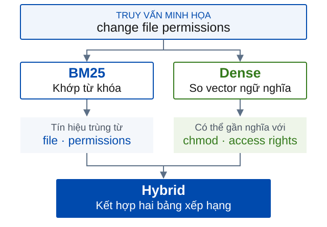
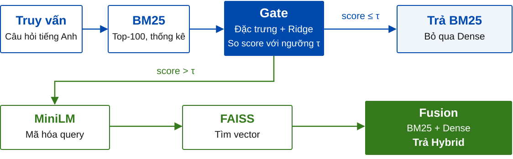
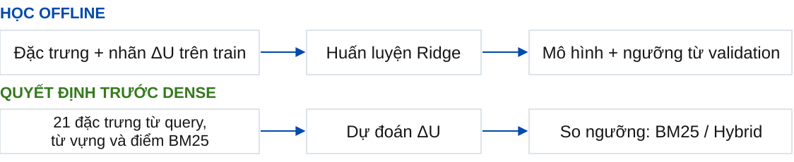

BM25
Khớp từ khóa, chi phí thấp. Có thể bỏ sót câu hỏi cùng ý nhưng dùng từ khác.
PE-GH
Pre-Encoding Gated Hybrid Retrieval
| Họ và tên | MSSV |
|---|---|
| Đầu Hồng Quang | 23020135 |
| Trần Quang Thành | 23020155 |
| Hoàng Quốc Bảo | 23020012 |
“How do I change file permissions in Linux?”
Tìm những câu hỏi đã có đề cập cùng một vấn đề, dù cách diễn đạt khác nhau.
Đầu ra: tối đa 100 câu hỏi xếp theo mức độ phù hợp.
Khớp từ khóa, chi phí thấp. Có thể bỏ sót câu hỏi cùng ý nhưng dùng từ khác.
Tìm theo ngữ nghĩa. Mỗi truy vấn cần mã hóa và tìm kiếm vector.
Kết hợp cả hai. Chạy thêm Dense làm tăng chi phí và không bảo đảm xếp hạng tốt hơn ở mọi truy vấn.

Lợi ích của Hybrid thay đổi theo truy vấn.
Thông tin có sẵn trước khi chạy Dense
có thể dự đoán một phần khác biệt này.
Gate cần chính xác và ít tốn chi phí. Chọn sai truy vấn hoặc overhead lớn có thể làm mất lợi ích.
Gate dự đoán lợi ích xếp hạng tăng thêm và chọn một trong hai hành động.
Bỏ qua mã hóa truy vấn
và tìm kiếm vector.
Chạy Dense và kết hợp
với kết quả BM25 đã có.
Học lợi ích của Hybrid so với BM25 để điều phối Dense trong giới hạn chất lượng.
Arabzadeh, 2021
Chọn chiến lược theo truy vấn.
LiteGator, 2025
Định tuyến bằng mô hình nhẹ.
Đích học lợi ích và bộ đặc trưng.
Chất lượng, chi phí và giới hạn trên câu hỏi kỹ thuật.
| Miền | Bài viết | Truy vấn |
|---|---|---|
| Programmers | 32.176 | 876 |
| Unix | 47.382 | 1.072 |
Tiếng Anh, kho cố định.
Mỗi miền có corpus tìm kiếm riêng.
Qrels xác định câu hỏi trùng lặp.
Loại chính bài viết của truy vấn khỏi kết quả.
H*: Hybrid chọn trên validation.
S*: phương án tĩnh tốt nhất trong BM25, Dense và H*.
nDCG@10 đo chất lượng top-10. Cận dưới một phía 95% của chênh so S* phải > −0,01 ở macro và từng miền.
Tỷ lệ truy vấn test gọi Dense, tính trên tập gộp hai miền.
Giảm mean latency so H* trên cùng máy, tính trên tập gộp hai miền.
BM25 chạy một lần. Gate quyết định trước khi mã hóa truy vấn.
Corpus embeddings và chỉ mục được chuẩn bị trước.

U là nDCG@10. Ridge học ΔU, tức lợi ích của Hybrid so với BM25.
Lợi ích này có thể dương, bằng 0 hoặc âm.

| Lượt | P1 | P2 | P3 | P4 | P5 |
|---|---|---|---|---|---|
| 1 | Test | Val | Train | Train | Train |
| 2 | Train | Test | Val | Train | Train |
| 3 | Train | Train | Test | Val | Train |
| 4 | Train | Train | Train | Test | Val |
| 5 | Val | Train | Train | Train | Test |
60 / 20 / 20
Train / validation / test
trong mỗi lượt, xấp xỉ theo số query.
Mỗi truy vấn làm test đúng một lần.
Khóa model và threshold trước khi chấm test. Chỉ chia truy vấn và nhãn; corpus tìm kiếm giữ đầy đủ.
OOF trên 1.948 truy vấn, macro cân bằng hai miền.
H* và S* trùng bảng xếp hạng trong cả 10 fold/miền.
| Phương pháp | nDCG@10 | Gọi Dense |
|---|---|---|
| H* | 0,314625 | 100% |
| S* | 0,314625 | 100% |
| PE-GH | 0,312163 | 57,75% |
Chênh nDCG@10 (macro)
−0,006009Cận dưới một phía 95%
Lớn hơn biên −0,01 ở macro và từng miền.
Ryzen 7 8745H, Windows 11, 4 logical CPU.
Batch = 1, concurrency = 1, 5 lần lặp.
request đo thật
truy vấn gọi Dense
CI 95% mức giảm so H*:32,01%–35,65%
Mean giảm 19,73%, dưới mục tiêu 20%. p95 (độ trễ phân vị 95%) hơi cao hơn H*/S*.
Cận dưới −0,009601, sát biên −0,01.
Hai miền, một encoder, một máy. Các gate đối chứng chưa có full online cùng lượt.
query bị skip
dù Hybrid có lợi
query gọi Dense
nhưng gain nDCG@10 ≤ 0
Dense có chọn lọc.
Chất lượng có kiểm chứng.
PE-GH giảm công việc ngữ nghĩa và mean latency
trong khi đạt biên chất lượng đã đăng ký.